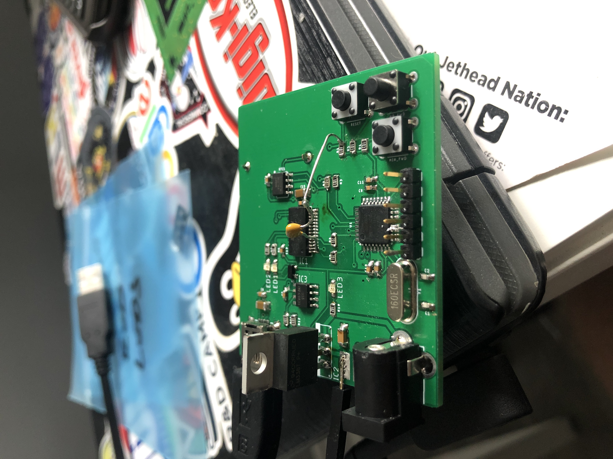
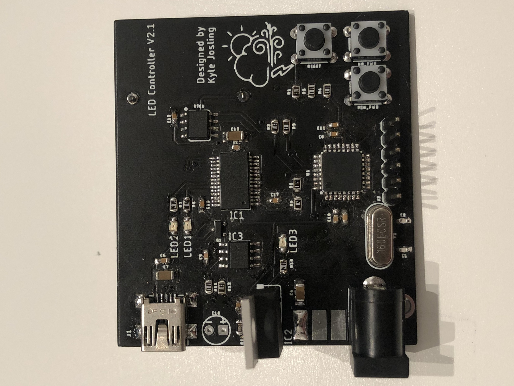

Custom Wordclocks
Goal
Make a custom wordclocks with my family member's names on them.
Overview
This year for Christmas I made these custom wordclocks for my family members. I layed a custom cut vinyl sticker over class inside an Ikea Ribba frame. I then designed and 3D printed a baffling to isolate each LED. I made an array of individual addressable RGB leds and placed them in the baffles.
The whole thing was driven using an Arduino and a real time clock module. I programmed the Arduino to display different times based on the time of the day. I was not happy with my Arduino, which was a little primitive - so I designed an LED controller using Eagle PCB and got the design manufactured.
Technologies Used
Project Log
It Works (8/27/2020)
Yeah, so I haven't really worked on this for a while, but I decided to order a second PCB revision with more decoupling caps, a proper linear regulator.. etc. And the bootloader loaded! But I couldn't program it over USB. Turns out, I forgot to add another cap between the reset pin on the Atmega328 and the DTR pin on the FTDI USB to serial chip. So I ordered another PCB (for the third time) and voila! A working LED controller, with a real time clock and a linear regulator on board.
 It Doesn't Work (3/23/2019)
So I soldered up the PCB and had trouble loading the bootloader. I looked at the board layout and made a few really glaring mistakes that would cause problems. I'm really impressed with myself for hand soldering components this small though. Time to do another board spin. Going to try to order the PCB sometime within the next week. I'm also working on another wordclock, so I'm going to make a section for the build process here.
PCB Came In!! (2/17/2019)
Here's the PCB. Going to solder on the components this week, try to flash the microcontroller and see if it works. Crossing fingers!
Designing Schematic and Board Layout (1/06/2019)
Here is my first attempt at designing a PCB. Made a mistake with the voltage regulator (didn't put in an adjustment resistor), but I found a fixed 5V regulator so all is good.